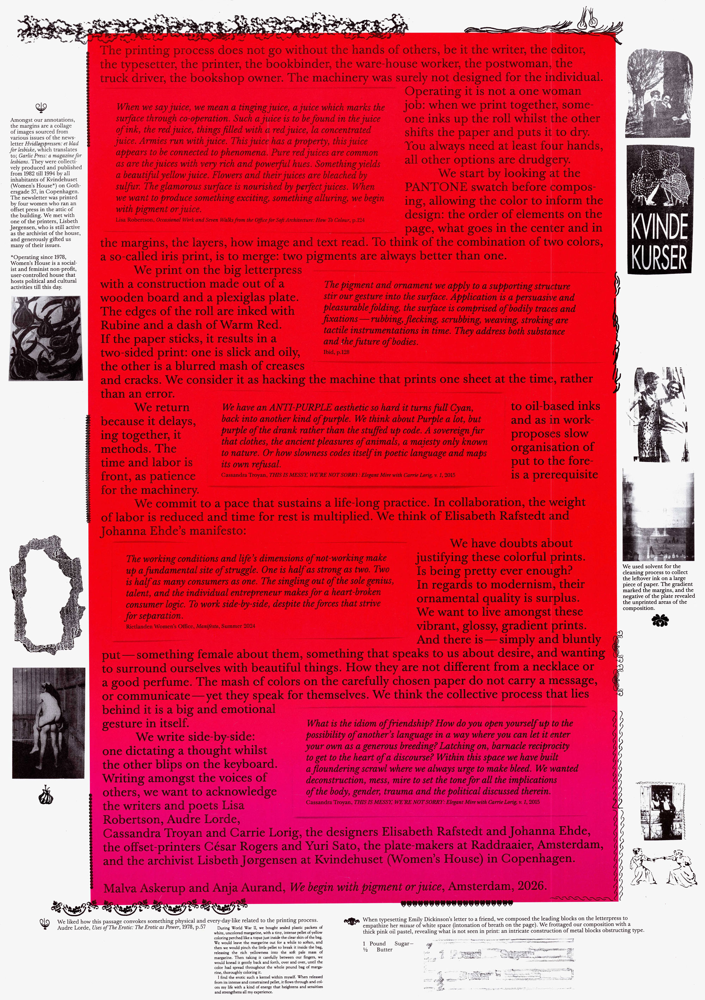
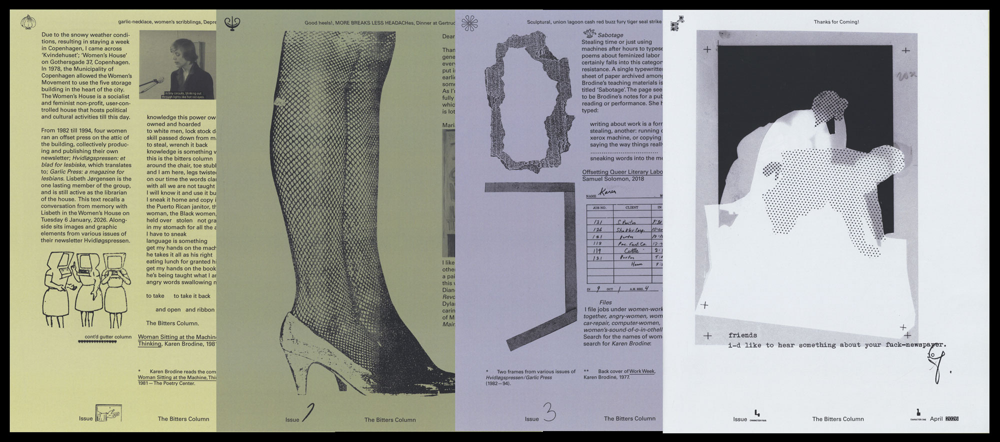
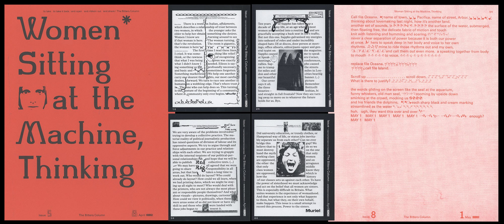
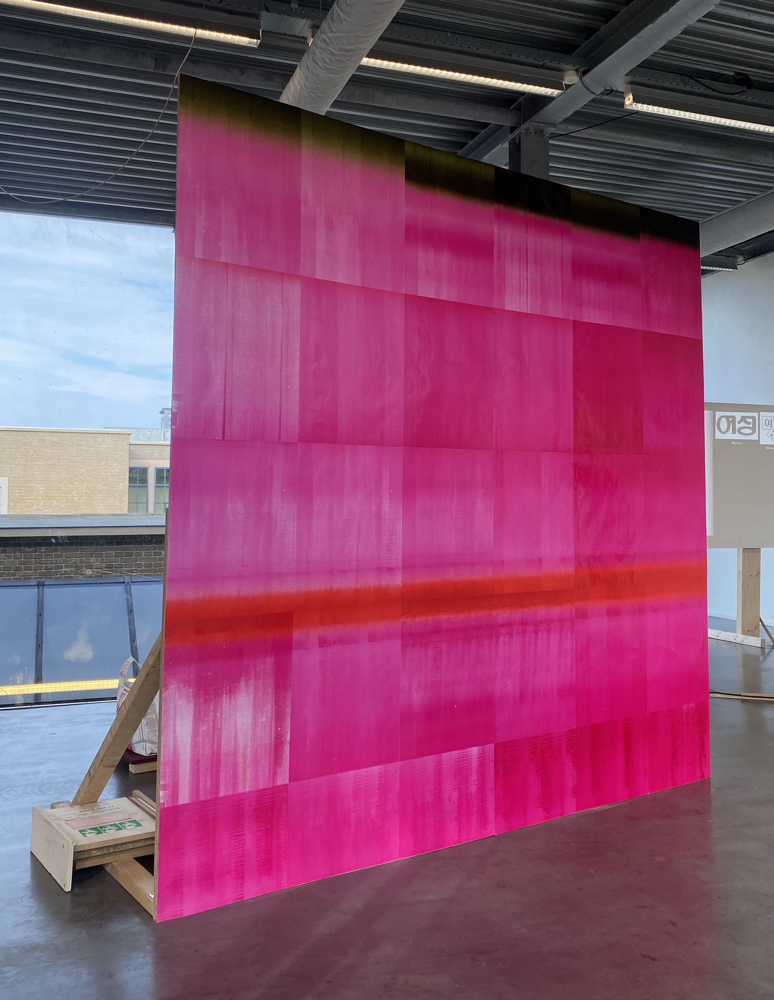
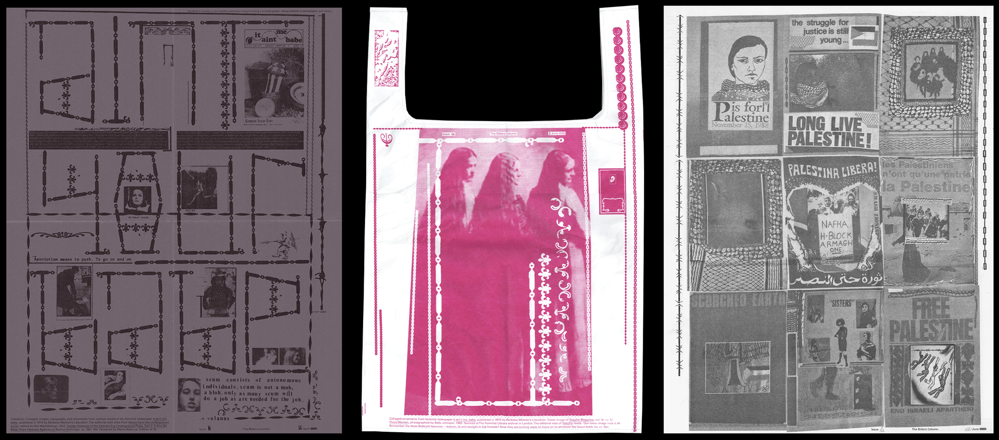
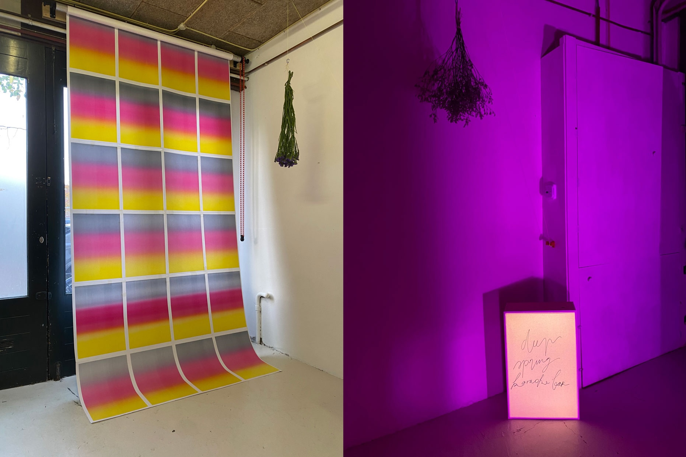

We begin with pigment or juice — offset printed A2 poster with Anja Aurand, Amsterdam (June 2026)

MAGENTA SOUL WHIP / Notes on Friendship — offset printed A2 poster with Jaehyun Kim, Amsterdam (February 2026) — read my thesis on collaborative work on
t-b-c.nl

The Bitters Column Issue 1–4 — ongoing bi-weekly publication as an inquiry into editorial practices, The Hague (March–July 2026) —
t-b-c.nl

The Bitters Column Issue 5, 6, 8 — ongoing bi-weekly publication as an inquiry into editorial practices, The Hague (March–July 2026) —
t-b-c.nl

The Bitters Column Issue 9 — ongoing bi-weekly publication as an inquiry into editorial practices, The Hague (March–July 2026) —
t-b-c.nl

The Bitters Column Issue 7, 10, 11 — ongoing bi-weekly publication as an inquiry into editorial practices, The Hague (March–July 2026) —
t-b-c.nl

Deep Spring Karaoke Bar at
Felix Salut's studio — event organised with Jaehyun Kim, Ivo Blackwood and Anja Aurand, Amsterdam (2025)

The Blazing Post #1: La Maison des Femmes — offset printed newsletter with Sophia Brinkmann, Antwerpen (April 2025)

The Blazing Post #1: La Maison des Femmes — offset printed newsletter with Sophia Brinkmann, Antwerpen (April 2025)

The Blazing Post #1: La Maison des Femmes — offset printed newsletter with Sophia Brinkmann, Antwerpen (April 2025)

Big For Free Anywhere KABK school newspaper Issue 1 — offset printed newspaper with Ivo Blackwood and Stan Zielinski, The Hague (2023–25)

Big For Free Anywhere KABK school newspaper Issue 1 — offset printed newspaper with Ivo Blackwood and Stan Zielinski, The Hague (2023–25)

Support KABK school newspaper Issue 2 — offset printed newspaper with Ivo Blackwood and Stan Zielinski, The Hague (2023–25)

Support KABK school newspaper Issue 2 — offset printed newspaper with Ivo Blackwood and Stan Zielinski, The Hague (2023–25)

Pitch KABK school newspaper Issue 3 — offset printed newspaper with Ivo Blackwood and Stan Zielinski, The Hague (2023–25)

Pitch KABK school newspaper Issue 3 — offset printed newspaper with Ivo Blackwood and Stan Zielinski, The Hague (2023–25)

Pitch KABK school newspaper Issue 3 — offset printed newspaper with Ivo Blackwood and Stan Zielinski, The Hague (2023–25)

Students4Palestine — riso printed A4 publication with Have A Good Dog Press, Amsterdam (June 2024)

Open, Ornament, O — publication, screenprint and typeface, Antwerpen (June 2025)

Open, Ornament, O — publication, screenprint and typeface, Antwerpen (June 2025)

rollin soffly — screenprinted poems by Kamau Brathwaite on fabric, Antwerpen (May 2025)

Possible Loving Tending: Transcribing Women in Print — publication, The Hague (December 2024)

Possible Loving Tending: Transcribing Women in Print — publication, The Hague (December 2024)

*Dancing—Or Soft Or Conversing Or — publication, The Hague (May 2024)

*Dancing—Or Soft Or Conversing Or — publication, The Hague (May 2024)